스위스 · Top of Europe · 3,454m
유럽의 정상에서 두 팔을 벌리다
새파란 하늘 아래 새하얀 빙하 위에 섰다. 영하의 바람이 불었지만 눈물이 날 것 같았다. 여기까지 왔다는 것만으로 충분했다.
🇨🇭 Switzerland · Jungfrau Region
인터라켄에서 그린델발트로, 그리고 융프라우요흐까지.
만년설과 에메랄드 호수, 알프스의 모든 것.
✦ Highlights
스위스 · Top of Europe · 3,454m
새파란 하늘 아래 새하얀 빙하 위에 섰다. 영하의 바람이 불었지만 눈물이 날 것 같았다. 여기까지 왔다는 것만으로 충분했다.
Grindelwald Village
어디서 사진을 찍어도 배경이 영화 세트같은 곳.
Lake Brienz · Iseltwald
이 색이 진짜라는 게 믿기지 않았다.
✦ Travel Diary
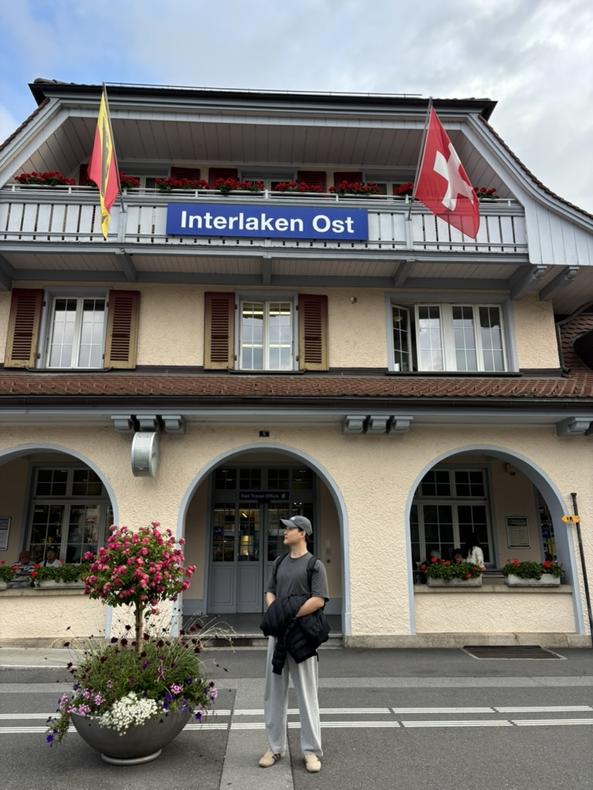
Interlaken Ost
인터라켄 오스트역에서 내리는 순간 이미 산이 보였다. 여행의 시작.
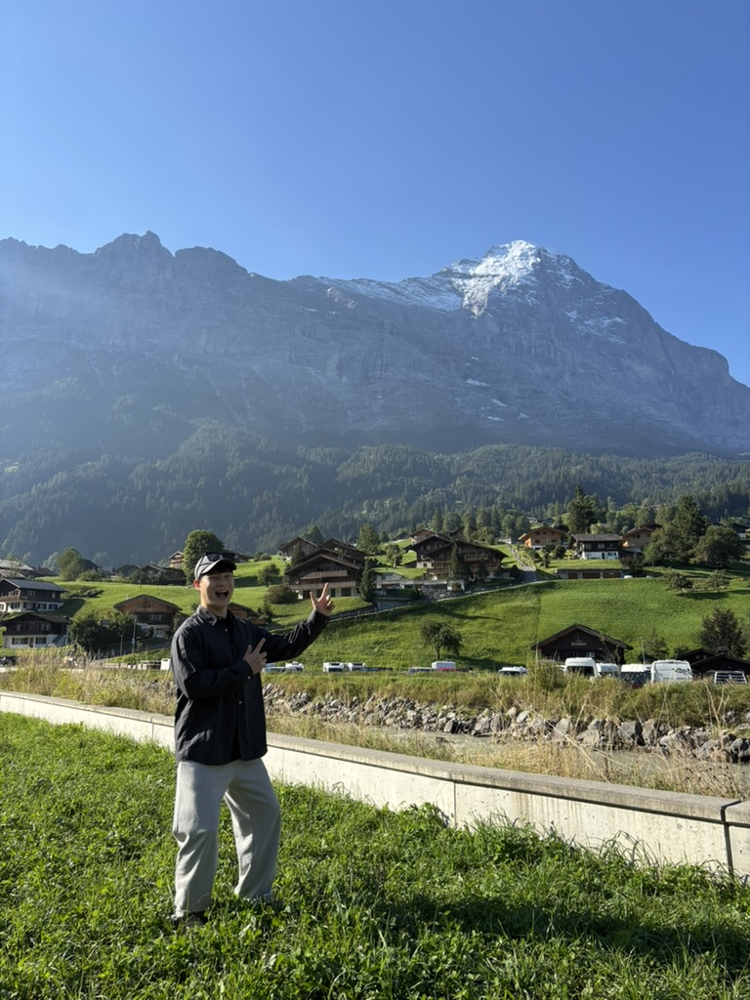
Grindelwald Village
고개만 들면 수직으로 솟은 아이거. 이 마을에 사는 사람들은 매일 이걸 보며 사는구나.
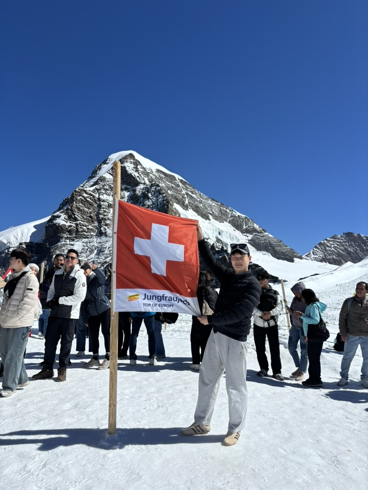
Jungfraujoch · 3,454m
빙하 위에 발을 딛는 순간. 이 장면을 잊지 못할 것 같다.
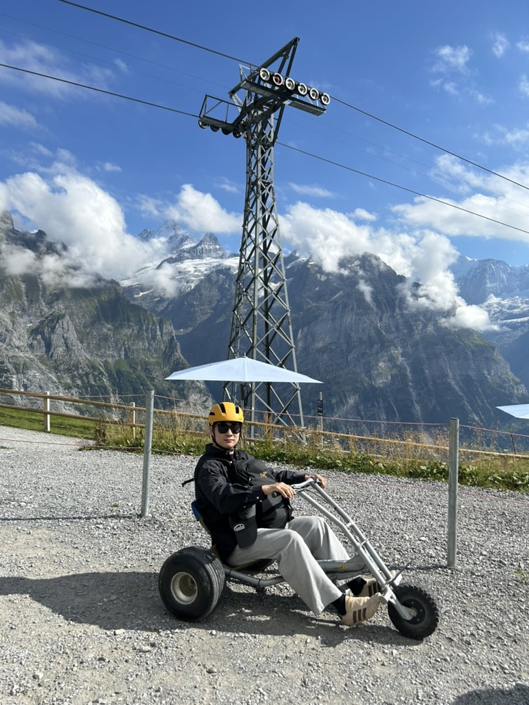
Grindelwald First
노란 헬멧을 쓰고 알프스 경치를 배경으로 마운틴 카트를 탔다. 인생 최고의 드라이브.
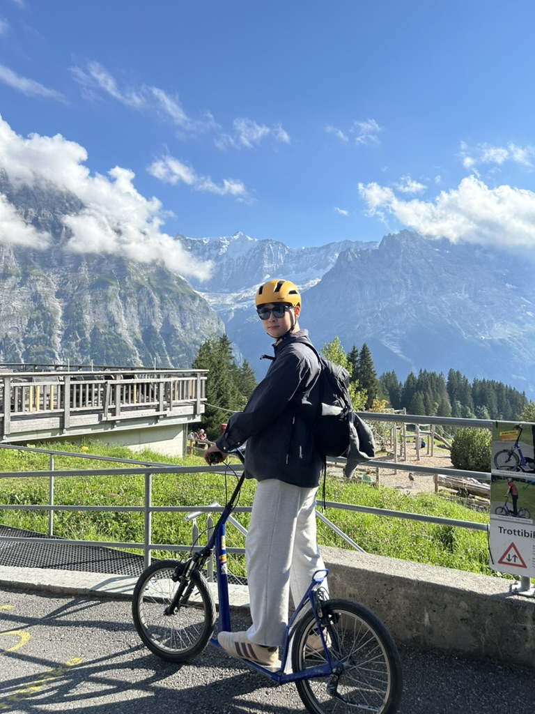
First · Männlichen
트로티바이크를 타고 산길을 내려오며 바라본 알프스 전경. 뒤돌아볼 때마다 숨이 막혔다.
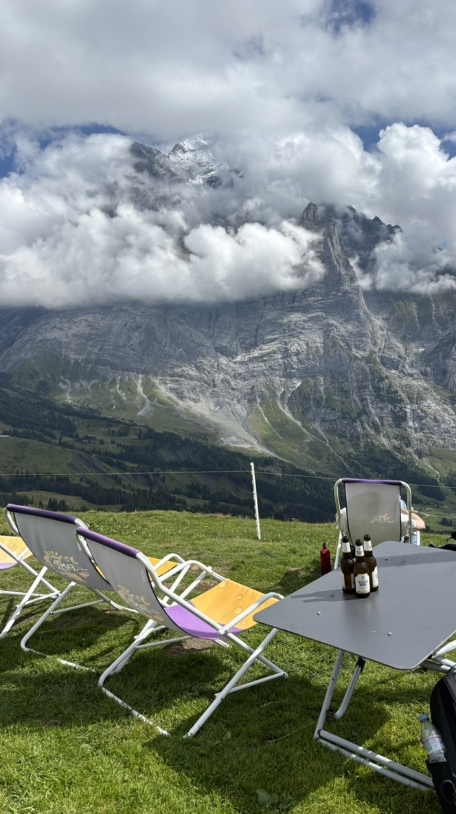
Grindelwald First · Terrace
썬 라운저에 누워 에이거가 구름에 감기는 걸 바라보며 마시는 맥주. 이게 바로 스위스다.
✦ Photo Gallery

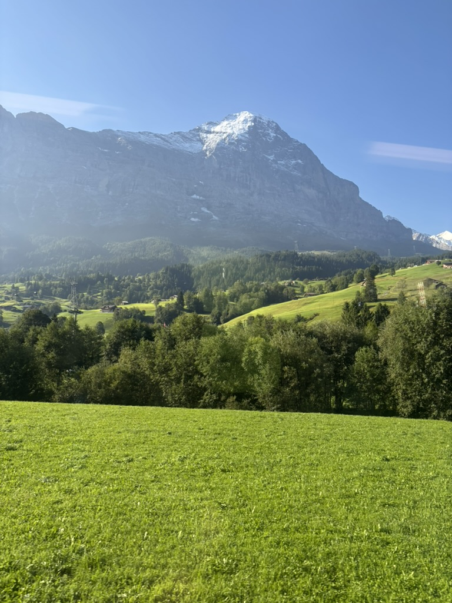
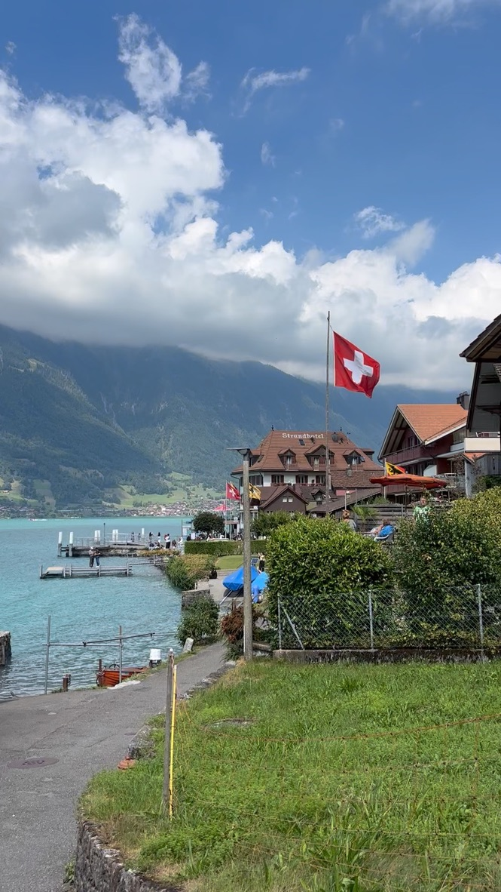
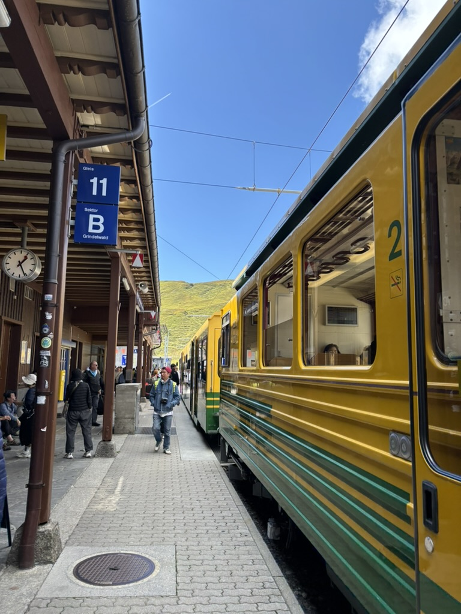
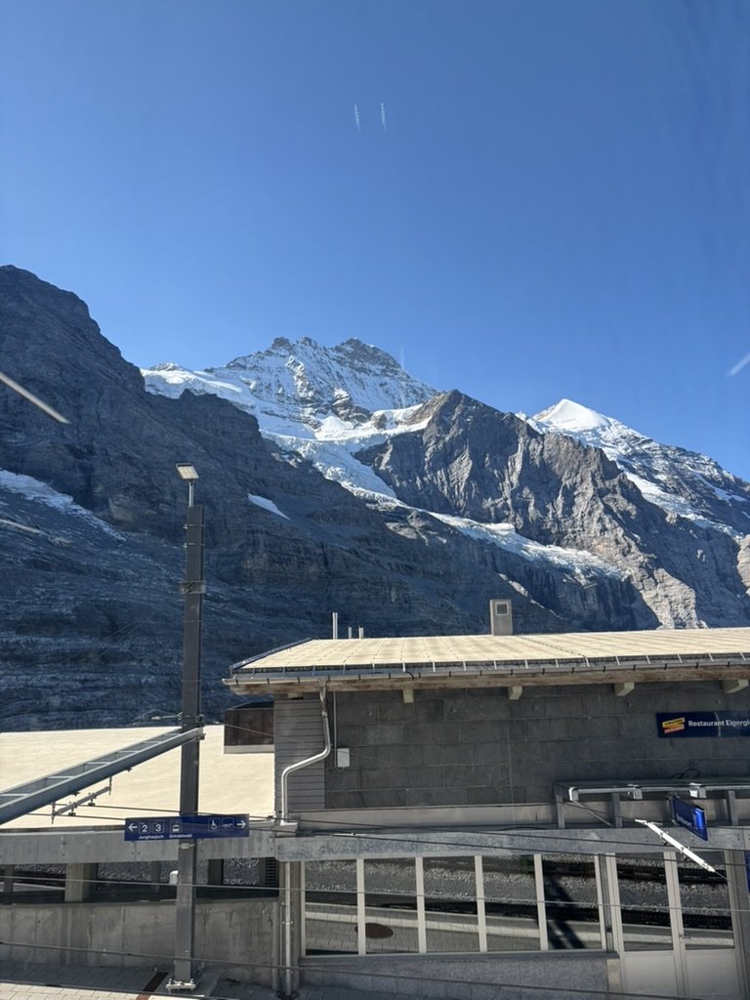
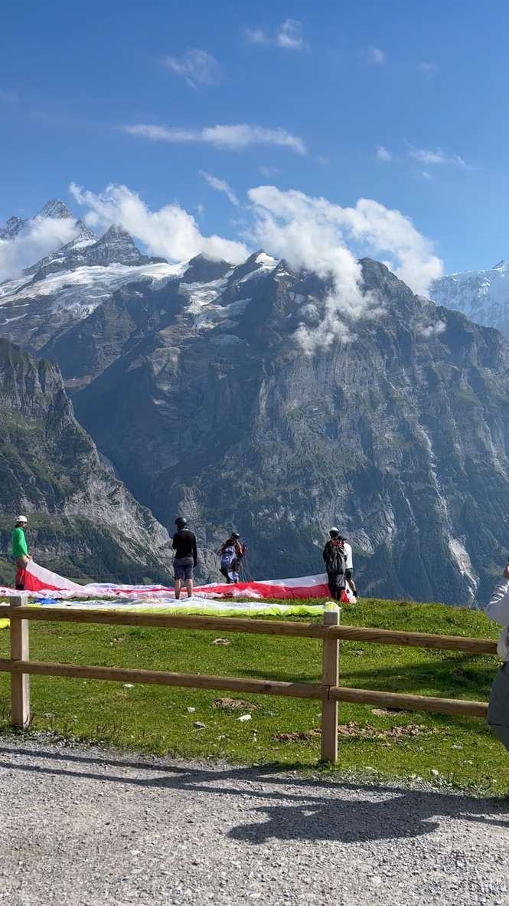
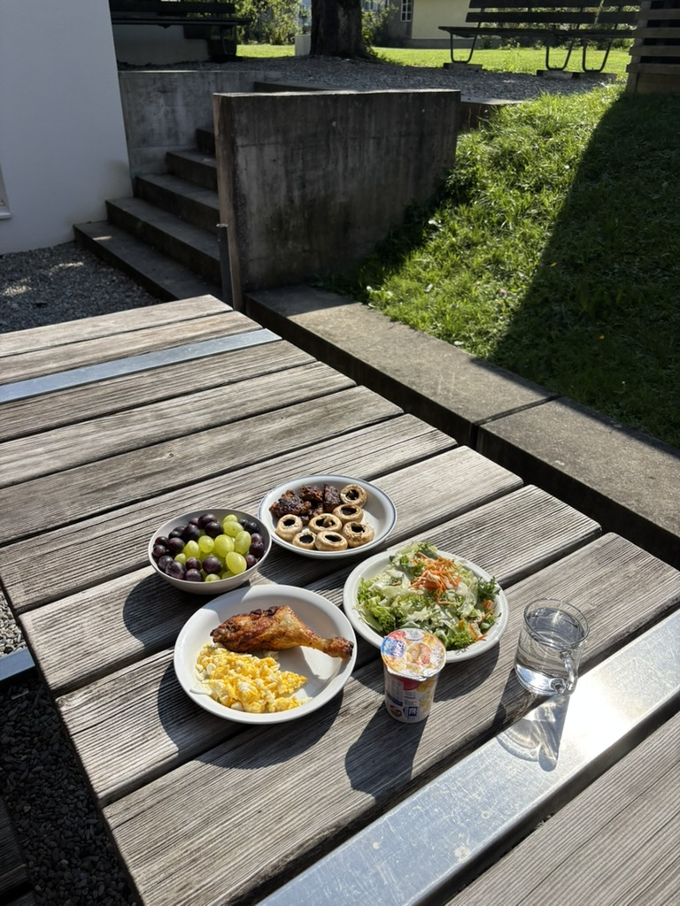
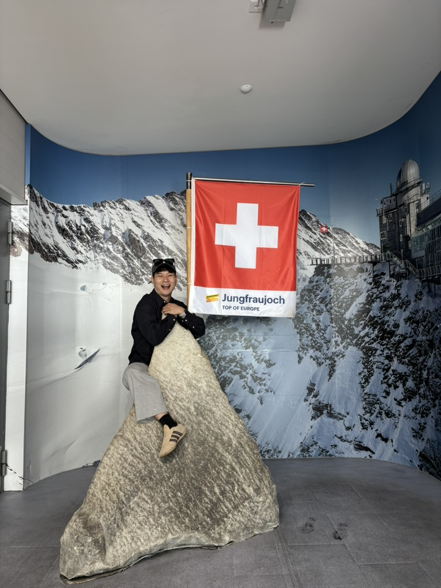
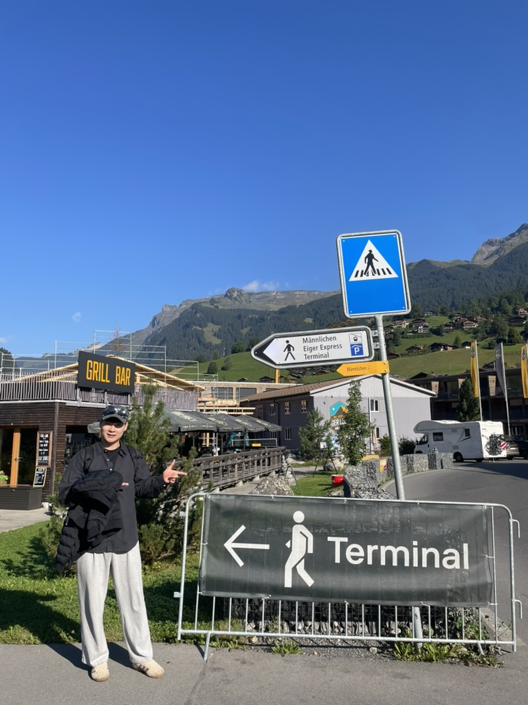
산은 항상 거기 있었다.
내가 드디어 거기 간 것뿐이다.
— 융프라우요흐 3,454m에서